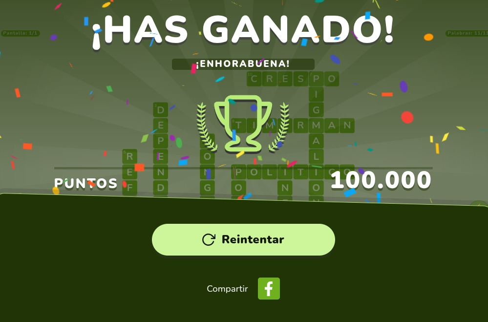

Today I completed an online crossword about concepts from A Survival Guide for Leaders by Ronald Heifetz and Marty Linsky, focused on change management. You can find it here: Conducción de personas – Educaplay.

It was a quick way to review the key vocabulary of the text.